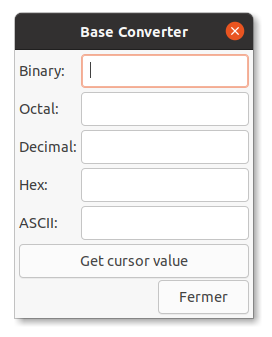

C2 Codage des entiers et des caractères
Activités
 Activité 1 : Numération binaire
Activité 1 : Numération binaire
Activité 2 : Numération hexadécimale
- Lancer l'application Ghex soit en tapant
ghexdans un terminal soit depuis le menu des applications.- Dans le menu Windows, sélectionner Base converter vous obtenez la fenêtre suivante : 
- Sur la ligne Decimal, entrer le chiffre 9 puis valider
Activité 3 : Encodage des caractères
En utilisant la video ci-dessus et en faisant éventuellement vos propres recherches sur le Web, répondre brièvement aux questions suivantes :
- L'encodage ascii
- Combien de caractères pouvaient être codés en ascii ?
- Expliquer rapidement pourquoi ce système était limité et à du être étendu
- L'encodage Latin-1
- Sur combien de bits était encodé chaque caractère ?
- Combien de caractères au maximum étaient représentées ?
- Ce système était-il universel ?
- L'encodage utf-8
- Un caractère est-il toujours encodé sur le même nombre de bits ?
- Cet encodage est-il compatible avec l'ancienne norme ascii ?
Cours
Vous pouvez télécharger une copie au format pdf du diaporama de synthèse de cours présenté en classe :
Attention
Ce diaporama ne vous donne que quelques points de repères lors de vos révisions. Il devrait être complété par la relecture attentive de vos propres notes de cours et par une révision approfondie des exercices.
QCM
1. Quelle est l'écriture en base 2 du nombre \((154)_{10}\) ?
- a) 10011100
- b) 10011001
- c) 00011010
- d) 10011010
- a)
10011100 - b)
10011001 - c)
00011010 - d) 10011010
2. Que peut-on dire de l'écriture en base 2 d'un nombre divisible par 2 ?
- a) Elle ne contient pas de 0
- b) Elle se termine par 0
- c) Elle ne contient qu'un seul 1
- d) Elle contient deux 1
- a)
Elle ne contient pas de 0 - b) Elle se termine par 0
- c)
Elle ne contient qu'un seul 1 - d)
Elle contient deux 1
3. Quelle est l'écriture en base 10 du nombre \((01101100)_{2}\) ?
- a) 216
- b) 108
- c) 54
- d) 4
- a)
216 - b) 108
- c)
54 - d)
4
4. Quelle est l'écriture en base 16 du nombre \((165)_{10}\) ?
- a) 95
- b) A5
- c) B5
- d) C5
- a)
95 - b) A5
- c)
B5 - d)
C5
5. En base 12, combien il y a-t-il de chiffres ?
- a) 10
- b) 11
- c) 12
- d) 13
- a)
10 - b)
11 - c) 12
- d)
13
6. Si l'écriture en base 2 d'un nombre ne comporte qu'un seul 1, alors ce nombre :
- a) n'est pas une puissance 2
- b) est une puissance de 2
- c) est divisible par 2
- d) n'est pas divisible par 2
- a)
n'est pas une puissance 2 - b) est une puissance de 2
- c)
est divisible par 2 - d)
n'est pas divisible par 2
7. Quelle est l'écriture en base 10 du nombre \((B2)_{16}\) ?
- a) 112
- b) 162
- c) 178
- d) 194
- a)
112 - b)
162 - c) 178
- d)
194
8. Pour écrire les nombres entre 1 et 100 en base 2, on a besoin au maximum de :
- a) 5 chiffres
- b) 6 chiffres
- c) 7 chiffres
- d) 8 chiffres
- a)
5 chiffres - b)
6 chiffres - c) 7 chiffres
- d)
8 chiffres
9. Quelle est l'affirmation exacte ?
- a) Le codage UTF-8 est sur 7 bits.
- b) Le codage UTF-8 est sur 1 octet.
- c) Le codage UTF-8 est sur 1 à 4 octets.
- d) Le codage UTF-8 est sur 4 octets.
- a)
Le codage UTF-8 est sur 7 bits. - b)
Le codage UTF-8 est sur 1 octet. - c) Le codage UTF-8 est sur 1 à 4 octets.
- d)
Le codage UTF-8 est sur 4 octets.
Exercices
Exercice 1 : Passer d'une base à l'autre
Recopier et compléter le tableau de conversion suivant :
| Ecriture décimale | Ecriture binaire | Ecriture hexadécimale |
|---|---|---|
| \((201)_{10}\) | ... | ... |
| \((EA)_{16}\) | ||
| \((57)_{10}\) | ||
| \((00100001)_2\) | ||
| \((128)_{10}\) | ... | ... |
| \((163)_{10}\) | ... | ... |
| \((5B)_{16}\) | ||
| \((10010101)_2\) | ||
| \((10010010)_2\) |
Exercice 2 : Un peu de reflexion
- Quel est le plus grand entier positif écrit en utilisant 10 chiffres en base 2 ?
- Que peut-on dire d'un nombre dont l"écriture en base 2 ne contient qu'un seul chiffre 1 ?
-
- En base 10, comment reconnaît-on un nombre divisible par 10 ?
- L'écriture en base 2 d'un nombre divisible par 2 se termine forcément par quel chiffre ? Justifier.
- De façon générale, soit \(b\) un entier supérieur ou égal à 2, que peut-on dire de l'écriture en base \(b\) d'un nombre divisible par \(b\) .
- En base 10, un million s'écrit avec 7 chiffres, combien en faut-il pour l'écrire en base 2 ?
Exercice 3 : Énigme
Il manque des chiffres (remplacés par des ?) dans le nombre binaire suivant : \(?001??111?\)
- Retrouver les chiffres manquants en utilisant les indices suivants:
- il n'y a pas de zéros non significatifs dans ce nombre
- ce nombre est divisible par 2
- il y a un nombre impair de 0 dans l'écriture binaire de ce nombre
- l'écriture décimale de ce nombre dépasse \((355)_{10}\)
- Donner l'écriture décimale de nombre.
- Donner son écriture hexadécimale
Exercice 4 : Un peu de Python
- Lancer Python en ligne de commande, comme vu dans le chapitre précédent.
- Tester la fonction
binde Python, en affichant par exemplebin(201)etbin(57). Rapprocher les résultats obtenus avec les réponses de l'exercice 1. Émettre une hypothèse sur cette fonction. - Valider votre hypothèse en faisant afficher l'aide de la fonction
bin. - Reprendre les questions précédentes pour la fonction
hex